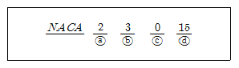
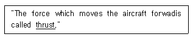
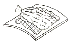
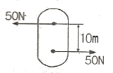
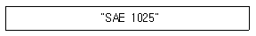
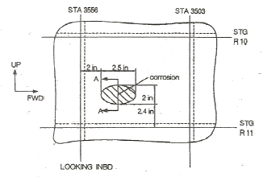
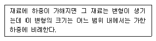

항공기체정비기능사 (2014-04-06 기출문제)
1과목: 비행원리
1. 프로펠러 비행기가 순항할 때 경제속도란 다음 중 어떠한 상태로 비행하는 것을 말하는가?
- 필요동력이 최소인 상태
- 필요동력이 최대인 상태
- 이용동력이 최소인 상태
- 이용동력이 최대인 상태
(정답률: 69%)

2. 방향키(Rudder)에 대한 설명으로 옳은 것은?
- 좌우 방향 전환의 조종 목적뿐만 아니라 옆바람이나 도움날개의 조종에 따른 빗놀이 모멘트를 상쇄하기 위해서 사용된다.
- 이륙이나 착륙기 비행기의 양력을 증가시켜 주는데 목적이 있다.
- 비행기의 세로축(longitudinal axis)을 중심으로 한 옆놀이 운동(rolling)을 조종하는데 주로 사용되는 조종면이다.
- 비행기의 가로축(lateral axis)을 중심으로 한 키놀이 운동(pitching)을 조종하는데 주로 사용되는 조종면이다.
(정답률: 71%)
3. 비행기의 방향안정에 일차적으로 영향을 미치는 것은?
- 수직꼬리날개
- 주날개
- 수평꼬리날개
- 스포일러
(정답률: 72%)
4. 비행기의 기준축과 각 축에 대한 회전 각운동이 옳게 연결된 것은?
- 세로축 - X축 - 키놀이(Pitching moment)
- 세로축 - Z축 - 빗놀이(Yawing moment)
- 수직축 - Y축 - 키놀이(Pitching moment)
- 수직축 - Z축 - 빗놀이(Yawing moment)
(정답률: 72%)
5. 다음과 같은 5자 계열 날개골에서 각 숫자의 의미를 옳게 설명한 것은?

- ⓐ항은 최대 캠버의 크기가 시위의 20% 임을 의미한다.
- ⓑ항은 최대 캠버의 위치가 시위의 15% 에 위치함을 의미한다.
- ⓒ항은 최대 캠버 위치 이후 평균 캠버선이 3차 곡선임을 의미한다.
- ⓓ항은 최대 두께가 시위의 1.5% 임을 의미한다.
(정답률: 60%)
6. 비행기가 500ft/s 의 속도로 수평선에 대해 30° 의 각도로 상승하고 있을 때 상승률은 몇 ft/s 인가?
- 152
- 171
- 234
- 250
(정답률: 52%)
7. 비행성능에 대한 설명으로 틀린 것은?
- 고도가 증가하면 상승률이 감소한다.
- 활공각이 크면 활공 거리가 길어진다.
- 고도가 증가하면 비행 속도와 필요 마력은 증가한다.
- 정상 등속도 수평비행이란 항력과 추력이 같고 양력과 무게가 같다.
(정답률: 54%)
8. 날개의 시위 길이가 2m, 공기의 흐름속도가 720km/h, 공기의 동점성계수가 0.2cm2/s 일 때 레이놀즈수는 약 얼마인가?
- 2 × 106
- 4 × 106
- 2 × 107
- 4 × 107
(정답률: 74%)
9. 비행기의 날개에 작용하는 양력의 크기에 대한 설명으로 틀린 것은?
- 양력계수에 비례한다.
- 비행속도에 반비례한다.
- 날개의 면적에 비례한다.
- 공기의 밀도의 크기에 비례한다.
(정답률: 64%)
10. 마하수로 분류한 속도의 명칭과 범위가 잘못 짝지어진 것은?
- 아음속 : 마하수 < 0.75
- 천음속 : 0.5 < 마하수 < 0.99
- 초음속 : 1.2 < 마하수 < 5.0
- 극초음속 : 5.0 < 마하수
(정답률: 76%)
11. 헬리콥터의 깃끝의 선속도(v)와 각속도(w)의 관계가 옳은 것은? (단, 헬리콥터 깃의 반지름은 r 이다.)
- v=rw
- v=r2w
- v=w/r
- v=w/r2
(정답률: 55%)
12. 720km/h 로 비행하는 비행기의 마하계 눈금이 0.6 을 지시했다면 이 고도에서의 음속은 몇 m/s 인가?
- 322
- 327
- 333
- 340
(정답률: 58%)
13. 다음 중 천음속 이상의 속도로 비행하는 항공기의 조파항력을 감소시키기 위한 비행기의 날개로 가장 적합한 것은?
- 직사각형 날개
- 테이퍼 날개
- 타원 날개
- 뒤젖힘 날개
(정답률: 70%)
14. 헬리콥터 로터조종기구인 사이클릭(Cyclic) 조종간과 콜렉티브(Collective) 조종간에 연결되어 로터 깃각을 변경시키는 장치는?
- 댐퍼(Damper)
- 에일러론(Aileron)
- 회전 경사판(Swash plate)
- 수직 안정판(Vertical stabilizer)
(정답률: 55%)
15. 프로펠러의 자이로 모멘트(Gyro moment) 특성은 자이로스코프의 어떤 특성에 기인하는가?
- 강직성(Rigidity)
- 진자효과(Pendulum effect)
- 섭동성(Precession)
- 회전효과(Rotation effect)
(정답률: 55%)
16. 볼트나 너트의 육면 중 2면 만이 공구의 개구 부분에 걸려 장ㆍ탈착하는데 쓰이는 공구는?
- 박스 렌치
- 스트랩 렌치
- 소켓 렌치
- 오픈엔드 렌치
(정답률: 70%)
17. 다음 문장에서 밑줄 친 부분의 내용으로 가장 올바른 것은?

- 연료
- 중력
- 양력
- 추력
(정답률: 85%)
18. 다음 중 접지된 페인팅 대상물과 페인팅 기구간에 고전압을 인가하여 페인팅하는 기법은?
- 정전 페인팅
- 스프레이(Spray) 페인팅
- 터치 업(Touch up) 페인팅
- 에어리스 스프레이(Airless spray) 페인팅
(정답률: 82%)
19. 다음 중 항공기 정비의 목적으로 틀린 것은?
- 청결과 미관상의 상태를 개선함으로써 승객에게 쾌적성을 제공해 줄 수 있어야 한다.
- 항공 정비 인력의 탄력적인 운용을 할 수 있도록 한다.
- 운항에 저해가 되는 고장의 원인을 미리 제거함으로써 정시성을 확보한다.
- 항공기의 강도, 구조, 성능에 관한 안전성이 확보되도록 한다.
(정답률: 74%)
20. 부품을 파괴하거나 손상시키지 않고 검사하는 방법을 무엇이라 하는가?
- 내부검사
- 비파괴검사
- 내구성검사
- 오버홀검사
(정답률: 93%)
2과목: 항공기정비
21. 항공기 정비를 위한 전기 장비에 화재가 발생하였을 경우 소화기로 가장 적합한 것은?
- 건조사
- 물펌프소화기
- 포말소화기
- 이산화탄소소화기
(정답률: 70%)
22. A system used to prevent the forming of ice is an (괄호) system 에서 다음 (괄호)안에 알맞은 용어는?
- de-icing
- refrigeration
- anti-icing
- combustion
(정답률: 70%)
23. 예방 정비의 모순점에 대한 내용이 아닌 것은?
- 부품에 이상이 있을 경우 즉각적인 원인 파악과 조치가 가능하다.
- 장기간 만족스럽게 작동되는 장비나 부품을 고의로 장탈한다.
- 부품의 분해 조립 과정에서 고장 발생의 가능성이 조성된다.
- 부품 본래의 결점을 파악하기 어려워 품질 개선에 어려움이 있다.
(정답률: 59%)
24. 복합소재의 수리 작업시 압력을 가하는데 가장 효과적인 그림과 같은 방법은? (문제 오류로 실제 시험에서는 2, 3번이 정답처리 되었습니다. 여기서는 2번을 누르면 정답 처리 됩니다.)

- 클레코
- 숏백
- 진공백
- 스프링 클램프
(정답률: 79%)
25. 마이크로미터에 대한 설명으로 틀린 것은?
- 측정물과 직접 닿는 부분은 앤빌과 스핀들이다.
- 보통 0.01mm 와 0.001mm 까지 측정 할 수 있다.
- 하나의 측정기로 외측, 내측, 깊이 및 단차를 모두 측정할 수 있다.
- 심블과 슬리브라는 명칭이 사용되는 구조부분이 있다.
(정답률: 71%)
26. “MS20470AD4-5" 리벳의 배치 작업시 최소 리벳피치는 몇 in 인가?
- 5/16
- 3/8
- 1/4
- 7/32
(정답률: 43%)
27. 가요성 호스에 NO.7 이 표시되어 있다면 호스의 치수는?
- 안지름이 7/8 인치이다.
- 안지름이 7/16 인치이다.
- 바깥지름이 7/8 인치이다.
- 바깥지름이 7/16 인치이다.
(정답률: 62%)
28. 항공기의 지상 활주를 위해 육지 비행장에 마련한 한정된 경로는?
- 유도로
- 활주로
- 비상로
- 계류로
(정답률: 65%)
29. 물림 턱에 락(lock)장치가 되어 있어 한번 조절되어 락(lock)되면 작은 바이스처럼 잡아주는 공구는?
- 롱노즈 플라이어(Long nose plier)
- 워터 펌프 플라이어(Water pump plier)
- 바이스 그립 플라이어(Vise grip plier)
- 콤비네이션 플라이어(Combination plier)
(정답률: 83%)
30. 다음 중 항공기 구조수리의 기본 원칙 4가지에 해당되지 않는 것은?
- 본래의 재료 유지
- 본래의 윤곽 유지
- 중량의 최소 유지
- 부식에 대한 보호
(정답률: 61%)
31. 다음 중 안전결선 작업에 대한 내용으로 틀린 것은?
- 안전결선의 절단은 직각이 되도록 자른다.
- 와이어를 꼴 때에는 팽팽한 상태가 되도록 한다.
- 안전결선은 한번 사용한 것은 다시 사용하지 못한다.
- 안전결선을 신속하고 일관성 있게 하기 위해서는 티 핸들을 사용한다.
(정답률: 76%)
32. 다음 중 비자성체의 표면균열을 탐지할 수 있는 비파괴검사법은?
- 자분탐상검사
- 초음파탐상검사
- 침투탐상검사
- 방사선투과검사
(정답률: 62%)
33. 항공기의 지상안전에서 안전색은 작업자에게 여러 종류의 주의나 경고를 의미하는데 주황색은 무엇을 의미할 때 표시하는가?
- 기계 설비의 위험이 있는 곳이다.
- 방사능 유출의 위험경고 표시이다.
- 건물 내부의 관리를 위하여 표시한다.
- 장비 및 기기가 수리, 조절 및 검사 중이다.
(정답률: 65%)
34. 볼트 헤드에 × 기호가 새겨져 있다면 이 기호의 의미는?
- 열처리 볼트
- 내식강 볼트
- 합금강 볼트
- 정밀 공차 볼트
(정답률: 54%)
35. 급작스러운 강풍이나 기상상황을 고려하여 바람에 의한 항공기 파손을 방지하기 위하여 지상에 정지시키는 지상작업의 명칭은?
- 항공기 견인(Towing)
- 항공기 계류(Mooring)
- 항공기 활주(Taxing)
- 항공기 주기(Parking)
(정답률: 77%)
36. 수직 구조 부재와 수평 구조 부재로 이루어진 구조에 외피를 부착한 구조를 이루며 대부분의 헬리콥터 동체 구조로 사용되는 구조 형식은?
- 일체형
- 트러스형
- 모노코크형
- 세미모노코크형
(정답률: 59%)
37. 항공기 재료 중 먼지나 수분 또는 공기가 들어오는 것을 방지하고 누설을 방지하며 소음방지를 하기 위한 부분에 주로 사용되는 재료는?
- 섬유
- 유리
- 고무
- 세라믹
(정답률: 75%)
38. 다음 중 나셀의 구성요소에 해당하지 않는 것은?
- 방화벽
- 스킨
- 카울링
- 쇽스트러트
(정답률: 73%)
39. 다음 중 정하중 시험에 해당하지 않는 항공기 구조시험은?
- 강성시험
- 한계하중시험
- 피로시험
- 극한하중시험
(정답률: 55%)
40. 안전 여유(Margin of Safety)를 구하는 식으로 옳은 것은?
- 허용하중/실제하중 + 1
- 허용하중/실제하중 - 1
- 실제하중/허용하중 + 1
- 실제하중/허용하중 - 1
(정답률: 54%)
3과목: 항공기체
41. 다음 중 날개보(Wing spar)에 대한 설명으로 옳은 것은?
- 공기 역학적 특성을 결정하는 날개 단면의 형태를 유지해준다.
- 날개에 작용하는 대부분의 하중을 담당하며 날개와 동체를 연결하는 연결부의 구실을 한다.
- 날개의 양력을 감소시키며 기체의 횡 방향 운동을 일으킨다.
- 날개의 비틀림 하중을 감당하기 위해 날개코드 방향으로 배치되는 보강재 이다.
(정답률: 60%)
42. 그림과 같이 항공기 부재에 크기가 같고 장향이 반대인 50N 의 두 힘이 수직거리가 10 m 만큼 떨어져 작용하고 있다면 이러한 짝힘(Couple Force)에 의한 모멘트는 몇 N-m 인가?

- 250
- 500
- 2500
- 5000
(정답률: 63%)
43. 헬리콥터의 동력전달장치에서 기관의 동력을 회전날개에 전달하거나 차단하는 역할을 하는 장치는?
- 구동축
- 변속기
- 클러치
- 기어박스
(정답률: 52%)
44. 앞착륙장치에서 불안전한 진동현상을 방지하는 장치는?
- 시미댐퍼
- 센터링 캠
- 바이패스 밸브
- 안전 스위치
(정답률: 82%)
45. 모노코크형(Monocoque Type) 동체의 구성요소로 가장 올바른 것은?
- 외피(Skin), 정형재(Former), 튜브(Tube)
- 외피(Skin), 정형재(Former), 벌크헤드(Bullkhead)
- 외피(Skin), 론저론(Longeron), 스트링어(Stringer)
- 프레임(Frame), 론저론(Longeron), 스트링어(Stringer)
(정답률: 76%)
46. 헬리콥터에서 전진비행은 어떤 조정 장치에 의해서 이루어지는가?
- 주기 조종간
- 동시피치레버
- 방향조종페달
- 플랩 작동 스위치
(정답률: 65%)
47. 금속으로 된 헬리콥터의 회전날개 깃에서 깃의 뿌리에 부착되어 있어 깃이 받는 하중을 허브에 전달하는 역할을 하는 것은?
- 그립 플레이트
- 팁포켓
- 깃 얼라이먼트핀
- 트림태브
(정답률: 38%)
48. 지름 2cm 인 원형 단면봉에 3000kgf 의 인장하중이 작용할 때 단면에서의 응력은 약 몇 kgf/cm2 인가?
- 477
- 750
- 955
- 1910
(정답률: 43%)
49. 다음과 같은 철강재료 식별 표시에서 각각의 표시와 의미가 잘못 짝지어진 것은?

- SAE - 미국 철강협회 규격
- 1 - 탄소강
- 0 - 5대 기본원소 이외의 합금 원소가 없음
- 25- 탄소 0.25% 함유
(정답률: 64%)
50. 항공기의 구조무게를 가볍게 하기 위한 소재로 제작하였을 때 설명으로 틀린 것은?
- 많은 화물을 수용할 수 있다.
- 많은 승객을 수용할 수 있다.
- 경제적인 동력장치의 선정이 가능하다.
- 연료소비 효율이 감소하여 운항경비가 감소한다.
(정답률: 60%)
51. 조종케이블의 방향을 바꿀때 사용되는 구성품은?
- 턴버클
- 풀리
- 페어리드
- 케이블 컨넥터
(정답률: 50%)
52. 항공기 위치표시 방식 중 동체 버턱선을 나타내는 것은?
- BBL
- BWL
- FS
- WS
(정답률: 55%)
53. 재료의 강도를 증가시키기 위해 금속을 높은 온도로 가열했다가 물이나 기름에서 급랭시키는 열처리 방법은?
- 담금질
- 뜨임
- 풀림
- 불림
(정답률: 82%)
54. 다음 중 항공기 조종계통에 사용되는 장치가 아닌 것은?
- 조종드럼
- 데릭붐
- 쿼드런트
- 트림감각장치
(정답률: 61%)
55. 그림과 같은 도면에서 부식이 발생한 곳은?

- 리브(Rib)와 근접한 부분
- 날개골(Airfoil)과 근접한 부분
- 세로대(Longeron)와 근접한 부분
- 스트링거(Stringer)와 근접한 부분
(정답률: 60%)
56. 헬리콥터가 전진비행을 할 때 수평안정판이 하는 역할로 옳은 것은?
- 주 회전날개의 수평을 유지시킨다.
- 꼬리회전날개가 손상되는 것을 방지한다.
- 수평안정판의 공기력이 아래로 작용하여 수평을 유지시킨다.
- 수평안정판의 회전력으로 헬리콥터의 회전을 방지한다.
(정답률: 58%)
57. 다음 중 항공기의 재료로 쓰이는 가장 가벼운 금속으로 전연성, 절삭성이 우수한 것은?
- 알루미늄
- 티탄
- 마그네슘
- 니켈
(정답률: 58%)
58. 다음 복합 소재 중 사용 온도 범위가 가장 넓은 것은?
- FRP
- FRM
- FRC
- C/C 복합재
(정답률: 62%)
59. 급속의 기계적 성질 중 외부에서 힘을 받았을 때 물체가 소송 변형을 거의 보이지 아니하고 파괴되는 현상은?
- 인성
- 전성
- 취성
- 연성
(정답률: 74%)
60. [보기]는 무엇에 대한 설명인가?

- 열변형 원리
- 훅의 법칙
- 파스칼 원리
- 관성의 법칙
(정답률: 58%)